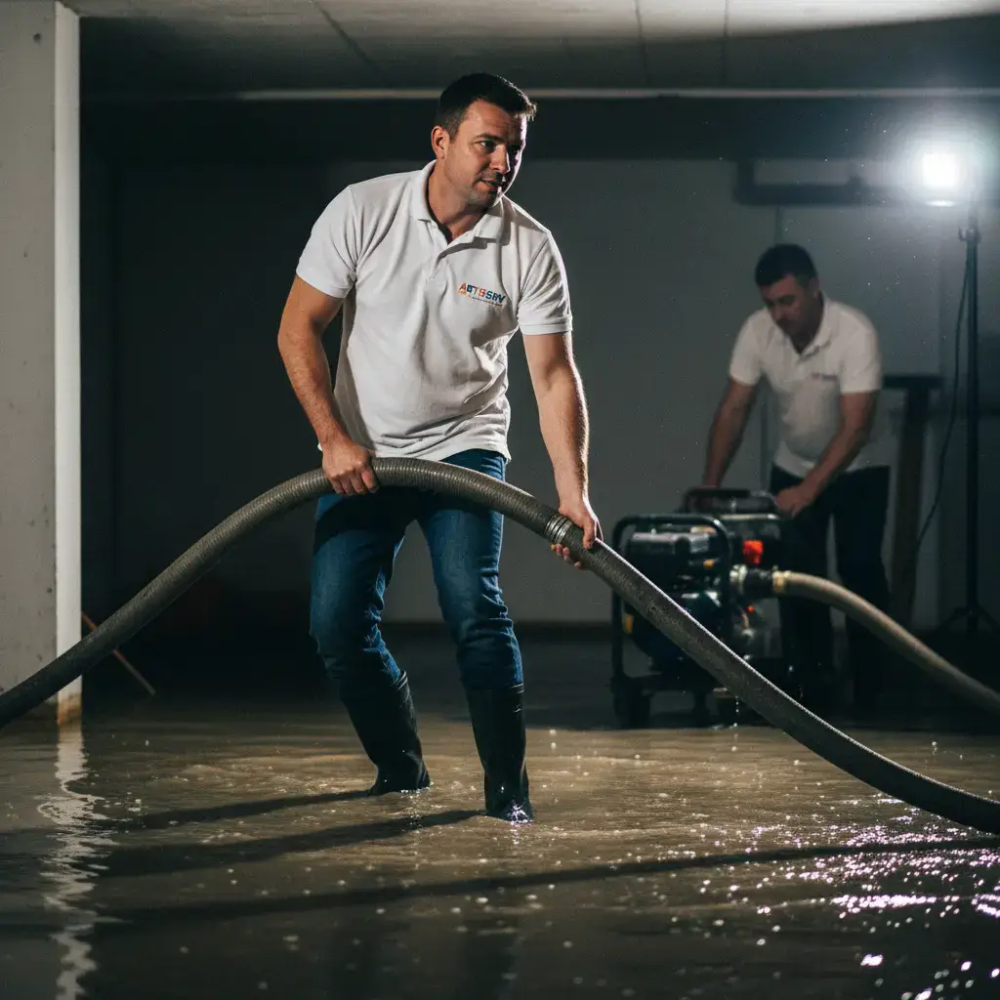

Expert en pompage et vidange à Tours et dans l'Indre-et-Loire. Évacuation cave inondée, vidange fosse pleine, pompage égouts bouchés. Camion pompe haute capacité, intervention rapide 24h/24 et 7j/7. Équipement professionnel pour tous volumes.

ARTISERV Débouchage intervient à Tours et dans l'Indre-et-Loire pour le pompage et l'évacuation d'eaux usées. Notre camion pompe haute capacité permet d'évacuer rapidement tout type de liquide : caves inondées, fosses pleines, égouts bouchés, eaux stagnantes.
Le pompage professionnel est la solution efficace en cas d'inondation, de débordement ou de fosse saturée. Notre équipement permet d'évacuer de grands volumes d'eau rapidement, avec des pompes haute puissance adaptées aux eaux chargées. Nous intervenons pour les particuliers, copropriétés, entreprises et collectivités.
Zone d'intervention : Tours, Saint-Cyr-sur-Loire, Joué-lès-Tours, Saint-Pierre-des-Corps, La Riche, Saint-Avertin et toutes les communes de l'Indre-et-Loire. Intervention d'urgence en moins de 30 minutes avec camion pompe professionnel.
Évacuation rapide d'eau stagnante en cave ou sous-sol. Pompes haute puissance pour grands volumes. Intervention urgente pour limiter les dégâts. Assèchement complet et nettoyage.
Pompage complet de fosse septique saturée. Camion vidangeur professionnel. Évacuation conforme des boues. Vérification du système. Entretien préventif pour éviter les engorgements.
Pompage urgent en cas de refoulement d'égouts. Évacuation eaux usées débordantes. Assainissement et nettoyage complet. Désinfection après intervention.
Évacuation eaux de pluie accumulées. Pompage parkings, cours, jardins inondés. Intervention après intempéries. Drainage et évacuation rapide.
Vidange bacs à graisse restaurants, cuisines pro. Pompage complet et nettoyage. Traitement conforme des déchets. Service régulier ou ponctuel.
Intervention urgente 24/7 pour toute situation nécessitant un pompage immédiat. Équipe mobile avec camion pompe. Réactivité garantie en moins de 30 min.
En cas d'inondation ou de débordement, chaque minute compte. Notre camion pompe intervient en moins de 30 minutes pour évacuer rapidement l'eau et limiter les dégâts matériels.
Notre camion pompe professionnel est équipé de pompes haute puissance capables d'évacuer de grands volumes d'eau rapidement, même chargée en matières solides.
Nous assurons une évacuation et un traitement conformes des eaux usées et boues. Traçabilité complète pour les professionnels soumis à réglementation.
Après le pompage, nous effectuons un nettoyage et une désinfection de la zone concernée pour garantir un environnement sain et éviter les mauvaises odeurs.
Devis gratuit sur place après inspection. Nos tarifs de pompage dépendent du volume et de l'accessibilité.
Tarifs indicatifs TTC. Devis gratuit et personnalisé selon volume, accessibilité et urgence. Paiement facilité. Intervention 24/7 avec supplément.
Notre camion pompe intervient en moins de 30 minutes. Devis gratuit par téléphone.
09 80 80 55 05La durée dépend du volume à évacuer. Pour une cave de taille moyenne (30-50m²), comptez entre 1h et 2h. Pour une fosse septique standard, l'intervention dure généralement 30 à 45 minutes. Les grandes surfaces ou volumes importants peuvent nécessiter plusieurs heures.
Oui, nous proposons un service d'urgence 24h/24 et 7j/7. En cas d'inondation, notre camion pompe peut intervenir en moins de 30 minutes sur Tours et agglomération. Plus l'intervention est rapide, plus les dégâts seront limités.
Notre camion pompe haute capacité peut évacuer plusieurs dizaines de mètres cubes. Pour les très gros volumes, nous pouvons effectuer plusieurs rotations. Nos pompes sont adaptées aussi bien aux petits volumes (quelques m³) qu'aux grandes quantités (caves complètes, fosses, etc.).
Il est recommandé de vidanger une fosse septique tous les 3 à 4 ans selon son utilisation. Nous effectuons une vidange complète tout en laissant un fond de boues nécessaire au bon fonctionnement biologique de la fosse. Un bordereau de suivi vous est remis.
Les eaux usées et boues sont évacuées conformément à la réglementation vers une station d'épuration agréée. Pour les professionnels (restaurants, industries), nous fournissons un bordereau de suivi des déchets (BSD) obligatoire pour la traçabilité.
Après le pompage, un nettoyage et une désinfection sont indispensables pour éviter moisissures et mauvaises odeurs. Nous proposons ce service en complément. Il est aussi recommandé de faire vérifier l'origine de l'inondation (canalisation bouchée, infiltration) pour éviter la récidive.